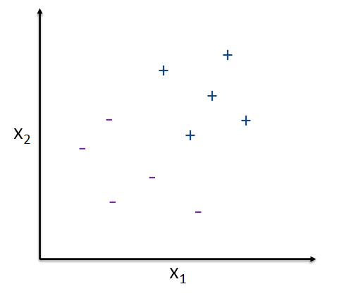

Fundamentals of
Data Analytics and
Predictions
Machine Learning 1
Xi (Rossi) LUO
Department of Biostatistics and Data Science
School of Public Health
The University of Texas Health Science Center at Houston
Outline
- What is learning?
- Theory (How to do it)
- How to do it well?
Machine Learning, Statistical Learning
- Machine learning: Field of study interested in the development of computer algorithms to
transform data into intelligent action. Learn some task from experience and improve with
experience. Predict with models.
- Statistical learning: a statistical model-based learning instead of an algorithm-based learning
Data Mining, AI
- Artificial intelligence: uses models built by machine and statistical learning to give rise to
intelligent behavior. Uses the predictions to choose actions to achieve a goal
(programming
based)
- Data mining: systematic hunt for actionable intelligence in existing data, done by a person, in
a specific situation, on a particular data set, with a goal in mind. E.g. using pattern
recognition techniques to discover/generate some preliminary insights. Get insight
to explain
patterns.
Examples
- Netflix
- Movies likely to be watched together by customers
- Predict the next movie that customers would like to watch
- Finance
- Medical tests, personalized medicine
- Likelihood to develop severe illness due to COVID
What We Need
- A pattern exists
- We cannot pin down the pattern mathematically, so going to depend on data to learn
- We have data on it
Example
- Credit approval. Bank deciding to give you credit card when you apply. They use data to decide
- Factors:
- Age
- Gender
- Annual salary
- Years in residence
- Etc.
Formalization of Learning
- Input: $X$ (e.g., customer application, $d$-dimensional vector)
- Output: $y$ (e.g., decision to extend credit or not, good/bad customer)
-
Target function: $f: X \rightarrow y$. The function $f$ maps from domain $X$ (set of vectors of
$d$
dimension)
to $y$
(binary)
- Data: $(X_1,𝑦_1 ),(X_2,𝑦_2 ),…,(X_𝑁,𝑦_𝑁 )$
-
If someone has these same attributes and made the bank money, they want to approve these people.
For
people who didn’t do well, would want to avoid those characteristics.
Learning Objective
- Hypothesis: $g: X \rightarrow y$, where $g$ approximates $f$, hopefully well
- Unknown target function $f$
- Training examples
- Use learning algorithm (which we determine from a hypothesis set or set of candidate formulas)
- Then final hypothesis $g$ which approximates, most likely not identical to, $f$
Simple Model
- $x=(x_1,…,x_𝑑 )$
- Approve credit if sum of $\sum_i^d w_i x_i$ > threshold.
- Deny credit if this is < threshold.
-
The linear formula $h$ can be written as $h(X) = sign( w^T x - threshold) $
Draw a Boundary to Separate Two Types of Points

Types of Learning
- Supervised Learning
- Unsupervised Learning
- Reinforcement Learning
- Semi-supervised Learning
Supervised Learning
- Using a set of observations to uncover an underlying process (the target function)
- As if a supervisor is helping you out to learn how to classify
- Example: Vending machine coin recognition
- Size and mass, scatter plot, determine if nickel, penny, etc.
Outcome
- Continuous: regression
- Categorical: classification
- No concerns about the predictors/inputs
Unsupervised Learning
- Instead of (input, correct output), only have input!
- Is there any information in the $X$’s that is useful in the absence of $y$?
- Example: patient clustering
Semi-supervised Learning
- Some obs have (input, output), and some obs only have (input)
- Measuring output can be costy
- Beyond the scope of this course
Reinforcement Learning
- Instead of (input, correct output), have (input, some output, grade for this output)
- Often our human experience for learning
- Won’t cover much of this topic in this course
Review
- For learning:
- Pattern exists
- Cannot pin down mathematically
- Have data on it
- In supervised learning, the target function $y=f(X)$ is unknown and we have a dataset
- The learning algorithm picks $g$ which approximates $f$ from a hypothesis set $H$
Review 2
- We cannot REALLY learn the unknown function
- You will only have a finite set, which does not cover $f$
- How will the function behave outside of the range of the data?
- Probability to the rescue
- Just as a sample proportion approximates the true population proportion (with some
probability)
- $g$ function will approximate the true $f$ target function